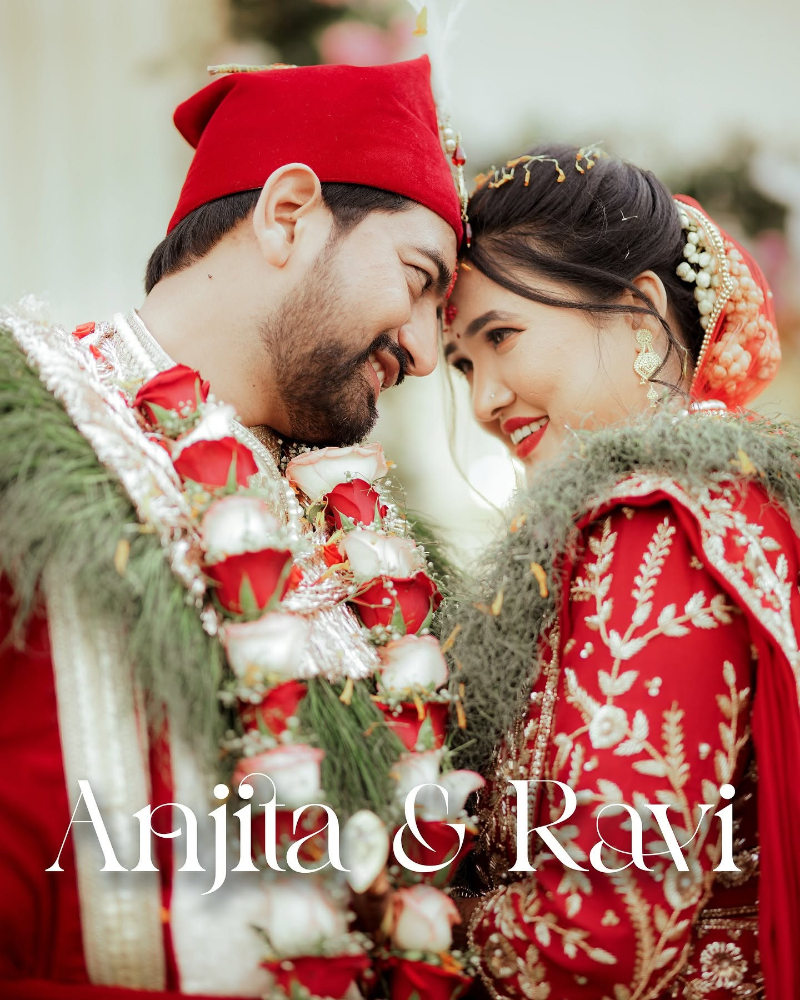

REEL 02 · ORIGINAL
WEDLOCK · REEL 02

W
Guwahati · Assam · India
Stories
worth returning to.
Wedding photography & cinematography built around the feeling of the day — the grand moments, the quiet ones, and everything between.
WEDLOCK PHOTOGRAPHYSCROLL TO EXPLORE ↓01 / 06
01The approach
We don't just
capture weddings.
We preserve the atmosphere — the look across the room, the nervous hands, the laugh nobody planned, the people who make the day yours.
Wedlock combines a documentary instinct with an editorial eye, creating photographs and films that feel elevated without losing the truth of the moment.
See how we work ↗ 01 · The vows
01 · The vows
02Details become memories.

03 · AtmosphereLet the room
tell its story.
tell its story.
02Selected weddings
A little of
everything.
Curated for feeling, not for filling space.More on Instagram ↗
03 · Films & cinematography
Some memories
need motion.
Real Wedlock footage — not a stock clip, not a mock-up. Wedding films and reels shaped around the atmosphere, people and energy of the day.
Watch the films ↓FRAME / SOUND / MOVEMENT · REAL WEDLOCK FOOTAGE
04Films / Reels
Real moments.
In motion.
Two original Wedlock videos supplied for this website — presented as part of the portfolio, with no external embed required.
FILM 01 · ORIGINAL
Let the day move again.
A supplied Wedlock wedding film, placed directly inside the site so visitors can experience the studio's cinematography without leaving the portfolio.
See more films on Instagram ↗
05What we photograph
From the first
look to the last dance.
Wedding-first coverage with the flexibility to tell the whole story — before, during and after the day.
 06 · The people behind the frame
06 · The people behind the frameAbout Wedlock
Make it
feel like you.
The best wedding photographs don't feel staged. They feel inevitable — as if the camera simply happened to be there when everything became beautiful.
From Guwahati, Wedlock photographs celebrations with a balance of direction and observation. The goal is simple: images that look extraordinary now, and still feel like your wedding years from now.
W
“Photographs should not only show you the day.
They should take you back to it.”
07 · Your date
Let's make something
worth returning to.
Tell us your date, your city and what you're planning. Start with a message — we'll take it from there.
Call / WhatsApp+91 97063 40304
SocialInstagram ↗Facebook ↗
Check availability ↗
49, Sankardev Path, Pub Sarania Rd, Chandmari, Guwahati, Assam 781003